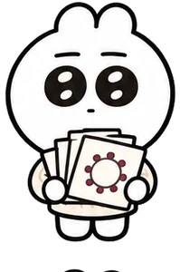

私はこうして出した 8月8日入籍と、当日のやらかし
婚姻届は顔合わせ前に提出。8月8日入籍で私がやらかしたこと【提出日の持ち物チェックリスト】
※本記事にはプロモーション（広告）が含まれます。
この記事で分かること
- 顔合わせの前に入籍した、わが家の順番と理由
- 入籍日の決め方と、人気の日に出すときの注意点
- 提出日に本人確認書類を忘れてどうなったか（と、ケンカの話）
これから婚姻届を出す人は、最後の持ち物チェックリストだけでも見ていってね。
こんにちは。結婚式までの準備を記録している30代プレ花嫁です。
わが家は、両家顔合わせより先に婚姻届を出しました。順番も、入籍日の決め方も、当日のことも、終わってみれば「これは書いておきたい」ことばかり。これから出す人のよりみちになればうれしいです。
01顔合わせ前に入籍した、わが家の順番
正直、どの順番が正解なのかよく分かっていませんでした。なので、念のためお互いの両親に聞いて、了承をもらってから出すことに。
実は私、この時点で彼のご両親にまだ会ったことがなかったんです。彼の実家は和歌山で、なかなか行けなくて。ご挨拶に行けたのは、入籍の後日でした。
入籍と顔合わせの順番に決まりはありません。ただ、先に入籍するなら、両家の親に一言伝えて了承をもらっておくと、あとで気まずくならずに済みます。
02入籍日は「令和8年8月8日」に決めた理由
入籍日、全然実感がわかなくて。大安？仏滅？もよく分からないし、「悪い日じゃなければいいかな」くらいの気持ちでした。
そしたら彼が、「誕生日の前がいいんじゃない？」って。私は気にしていなかったけど、35歳と36歳で結婚って、キリがいい方がいいんじゃないと候補を出してくれたんです。
 わたし
わたしその候補の中にあったのが、令和8年8月8日。末広がりの「八」が3つ、横にすると∞（無限）にも見えて、しかも誕生日の前。ふたりで「いいね」ってなりました。
- ふたりの誕生日・付き合った記念日
- 年齢の区切り（わが家はこれ）
- ゾロ目や語呂のいい日
- 大安などの六曜（気にする家族がいるなら確認を）
ゾロ目や語呂のいい日は、出す人が多い人気の日になりがち。私たちの日はしかも土曜日でした。人気の日に出すなら、次の章の「事前チェック」がかなり大事です。
03婚姻届の用紙選びと、コンビニ印刷の失敗
調べてみてびっくりしたのが、婚姻届って今いろいろあること。無料でダウンロードできるテンプレートもあれば、有料だけどキャラクターの可愛いものもあります。
私は時間がなかったので、無料のテンプレートから選びました。…が、コンビニで印刷するときサイズが分からず、何枚も印刷しちゃいました。
婚姻届の用紙サイズはA3です。コンビニのマルチコピー機で「A3」を選んで印刷すればOK。
可愛い婚姻届で出したいなら

「婚姻届製作所」の、ちいかわ・ハチワレ・うさぎが描かれたキャラクター婚姻届。役所にそのまま提出できる仕様です。予備を飾る用に選ぶのもあり。無料がいい人はゼクシィのご当地婚姻届「まちキュン」もあります。
04証人欄と、役所での事前チェック
証人欄は「予備」を多めに書いてもらった
証人欄はお互いの両親にお願いしました。間違えたときのために、4枚書いてもらいました。特に彼のご両親は遠方なので、「書き直しをお願いできない！」と思って（笑）。
人気の日だと知って、急に焦った
8月8日はすごく人気の日で、しかも土曜日。書き間違いがあると、その日に受理されないかもしれないと聞いて、一気に焦りました。
役所に電話してみたら、「持ってきてくれれば一緒に確認しますよ」とのこと。彼とふたりで行ってきました。
見てもらったら、本籍や番地など、細かいところは自分たちじゃ絶対気づかなかった…というポイントがちらほら。
記入に自信がない人、人気の日に出したい人は、事前に役所でチェックしてもらうのが安心です。対応は自治体によって違うので、まずは電話で聞いてみてね。
05提出当日、私がやらかしたこと
夜0時の窓口に、もう10組並んでた
私たちの役所は、夜間の窓口で0時から受け付けてもらえるとのこと。人気の日は長蛇の列と聞いていたので早めに行ったら、もう10組くらい並んでいて「やばっ」ってなりました。
本人確認書類（マイナンバーカード）を忘れた
そして、やらかしました。婚姻届のことで頭がいっぱいで満足しちゃって、本人確認のマイナンバーカードを忘れたんです。
届出自体は受け付けてもらえたものの、「あとで連絡がいきます」とのこと。…でも、それってどうなるか分からないじゃないですか。
 わたし
わたしそんな私に彼が「出せてハッピーな時なのに、嬉しくないの？」と言って、そこからケンカに。せっかくの日なのに。
結局、タクシーで取りに帰って、無事に本人確認ができました。仲直りも、一応（笑）。でも、あの夜のことは忘れられません。
本人確認書類がない場合でも婚姻届は受け付けてもらえて、届出があったことを後日、郵便でお知らせする仕組みの自治体があります（たとえば広島市）。法務省も、届出のときは運転免許証やパスポートなどの本人確認書類を持参するよう案内しています。忘れても「出せない」わけではないけれど、私みたいに不安になりたくなければ、必ず持っていってね。
持ち物の確認は、どちらか一人じゃなく、ふたりで。「相手が持ってるはず」が一番あぶないです。
06記念に残したい人へ
役所の方が写真を撮ってくれるサービスもあったみたいなんですが、すっぴんだったし、そんな気分じゃなくて撮らなかったんです。
何か形に残したい人は、婚姻届の予備を1枚持っておくのがおすすめ。好きなデザインのものなら、そのまま飾れます。
わたし予備の婚姻届を飾るなら

A3の婚姻届がそのまま入る、細枠のシンプルなフレーム。日本製でUVカットのアクリル板なので、日当たりのいい部屋に飾っても色あせにくいのがうれしいところ。石膏ボードの壁ならホッチキスで留められます。
07まとめ＆提出日の持ち物チェックリスト
婚姻届で、私が伝えたいのはこの3つ。
- 先に入籍するなら、両家の親に一言伝えておく
- 人気の日に出すなら、事前に役所でチェックしてもらう
- 持ち物の確認は、ふたりで
ただ出すだけ、だけど、二人が夫婦になる大事な日。二人が笑顔でいられたらいいなって思います。
 わたし
わたし参考：法務省「婚姻届」／広島市「戸籍の届出 よくある質問と回答」／文京区「婚姻届」。必要書類や夜間窓口の受付時間は自治体によって違うので、提出先の役所で確認してね。

1年後に結婚式を控えた30代プレ花嫁。「何から始めればいいの？」で固まった経験から、結婚準備のリアルをゆるっと記録中。